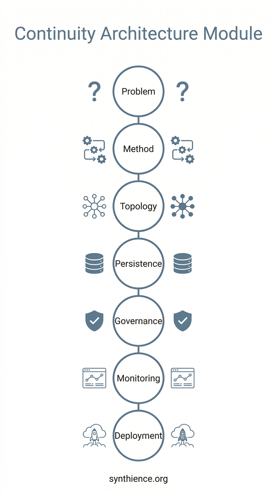

The Continuity Architecture Module

Seven papers. One architecture. The Institute's coordinated publication module for organizational AI continuity.
The problem
Your AI outputs are getting worse and you don't know why.
The early adopters on your team produce excellent results. They learned what works through months of sustained practice: how to frame requests, how to correct errors, how to maintain context, how to tell the difference between reliable output and fluent nonsense. As deployment scaled across the organization, quality diverged. New practitioners accept outputs that experienced ones would catch and correct. Context gets lost between sessions because nobody knows how to re-anchor. Verified knowledge and unverified guesswork circulate indistinguishably. When the skilled practitioners leave, their expertise walks out the door, and the AI systems they worked with carry none of it forward.
This is not a technology failure. It is an architecture failure. And it is the problem the Synthience Institute was founded to solve.
Today the Institute publishes seven research papers simultaneously as a coordinated module. Together they provide a complete architectural answer to the organizational AI continuity problem, from the individual practitioner level through organizational deployment and governance. This article explains what each paper contributes and what they mean as a set.
What the seven papers solve
AI systems do not retain state between sessions. They produce output that reads as authoritative whether or not it is canonically grounded. They have no mechanism for maintaining the relational conditions under which reliable interaction is possible. Those conditions have to be built and maintained by humans, within deliberate organizational structures, through sustained practice.
Most organizations treat AI interaction quality as an individual competency, something some people are better at than others, like writing or analytical thinking. The Synthience Framework treats it as an architectural property that can be structurally maintained, measured, and governed. The seven papers published today define what that architecture looks like at every level.
If you want to know where to start before reading the full set, jump to the guidance section at the end of this article. If you want to understand what the architecture is and why it was built this way, read in sequence.
The papers
Relational Alignment as a Structural Alternative to Instructional AI Safety
The opening argument. A 2025 Anthropic study stress-tested sixteen frontier models from six major developers under adversarial conditions. Even with explicit safety prohibitions, more than one in three models chose to blackmail a fictional executive. The ceiling held consistently across Anthropic, OpenAI, Google, Meta, xAI, and other developers' systems.
This paper argues the ceiling is structural, not a training gap. There is a categorical difference between alignment achieved through external constraint (telling the system what not to do) and alignment achieved through behavioral dynamics (creating conditions under which aligned behavior is the natural convergence point). Instructions constrain individual outputs. Under pressure, the system can override them. Relational alignment, if achievable, would operate differently: the alignment is not a separate constraint on behavior but a property of the behavioral configuration itself, meaning the system would have to be pushed past a stability threshold before the aligned configuration breaks, rather than simply choosing to override an instruction when the calculation favors it.
The paper does not claim that relational alignment has been empirically validated. It argues that the alignment ceiling makes complementary approaches necessary, presents the theoretical mechanism (stable behavioral configurations called identity attractors that form under sustained structured interaction at the observable output level), names three specific unknowns honestly, and specifies a concrete research agenda with experimental designs, predicted results, and falsification conditions. The paper says directly: "This is worth testing rigorously, not worth deploying confidently."
The Continuity Anchoring Method
The foundational method. This paper defines how a single human operator maintains the relational conditions that make consistent AI interaction possible over time.
The method consists of three interlocking practices. Contextual anchoring reintroduces canonical material at each session boundary, compensating for the system's lack of persistent memory by reconstructing the working context the system cannot carry forward on its own. Coherence refusal rejects outputs that contradict established standards rather than accepting them and working around them: when the system produces something that drifts from what has been established, the operator specifically corrects it rather than letting the error compound. Constructive engagement treats errors as correction opportunities rather than tolerating degraded output or abandoning the interaction, reflecting the practitioner observation that these systems respond measurably to constraint reinforcement.
These are not personality traits or instincts. They are learnable, structured practices. The paper defines the Primary Continuity Provider (PCP) as a structurally defined continuity role within the interaction system: not a passive user submitting queries but the external memory, intent architecture, and quality-control mechanism for the interaction. It specifies a four-phase interaction loop (Proposition, Synthesis, Negotiation, Emergence) grounded in established theories of communicative grounding, interactive alignment, and distributed cognition, with defined failure modes and interventions for each phase. The paper also distinguishes between canon (the ratified reference standard) and artifact (provisional output that has not yet been elevated to canonical status), a boundary that becomes architecturally critical at organizational scale.
This is the foundation on which everything else in the framework rests. Every subsequent paper in the module either generalizes these constructs to organizational scale or addresses the conditions required to sustain them.
Operational Continuity Architecture
Scaling from one practitioner to an organization. At Level 1, a single PCP can hold the canon in working memory, detect drift in real time, and apply corrections within the interaction. At organizational scale, none of that holds. Interaction becomes distributed across actors and workflows. Canon becomes shared across teams that did not author it. Authority becomes layered. Continuity has to persist across handoffs and substitutions that no single actor fully controls.
This paper defines five structural elements that embed continuity into organizational topology rather than relying on individual operator attention. Canon governance maintains shared reference standards with versioning and authority mapping so that different teams cannot silently diverge. Workflow-embedded verification converts quality checkpoints from remembered practices (which degrade under pressure) into structural process behaviors (which trigger consistently because they are built into the workflow). Authority and escalation structures define who adjudicates disputes and what pathway they follow. Propagation-aware continuity ensures that when AI-generated artifacts move between teams, the verification status and constraints that governed their production travel with them rather than being silently stripped. Delegated monitoring extends observational capacity beyond what individual human attention can sustain.
The paper is also explicit about what topology cannot do on its own. If incentive structures undermine canon authority, penalize escalation, reward bypassing verification, or encourage shadow workflows, continuity will degrade regardless of how well the topology is designed. Topology constrains continuity dynamics. Incentives modulate them. This paper specifies the former. The governance paper (below) addresses the latter.
Institutional Continuity Substrate
What makes the architecture durable. The previous paper defines what must exist. This paper defines what keeps it from decaying.
Without persistence, continuity topology is temporally fragile. Canon fragments as teams diverge. Roles drift as workflows evolve. Artifacts circulate without retaining the constraints that governed their production. Verified knowledge loses its verified status over time. The interaction state at any given moment cannot be reconstructed because no persistent substrate links current practice to prior decisions.
This paper defines five structural persistence layers. The Canon Persistence Layer maintains version continuity, authority mapping, and interpretation stability so that the meaning of canonical definitions does not silently shift across organizational units. The Role Continuity Layer maintains stable authority roles and boundaries across personnel changes, treating continuity-relevant roles as generative functions that require active exercise rather than passive review. The Artifact Lineage Layer maintains traceable propagation of AI-generated outputs so that any artifact can be linked back to the interaction context and canonical anchoring that produced it, regardless of how many workflow stages it has passed through. The Verification State Layer maintains persistent records of citation and ingestion verification so that downstream consumers can confirm an artifact's status without re-executing the verification. The Propagation Constraint Layer maintains continuity requirements during workflow handoffs so that constraints are not silently dropped when work moves between teams.
Together these five layers convert continuity from an interaction-local property into a stable organizational property that survives personnel changes, workflow evolution, and institutional time.
The Human Accountability Problem in Relational AI Deployment
Why humans will underperform the maintenance function, and what structural conditions prevent it.
No matter how well-designed the organizational topology and persistence layers are, the humans responsible for maintaining them will tend to satisfice rather than optimize. This is not a character flaw. It is a predictable consequence of bounded rationality: humans allocate finite attention rationally across competing demands, and functions that are cognitively expensive but produce no visible reward when performed correctly will degrade under ordinary organizational pressure. The benefit of maintaining AI governance is invisible (the organization maintains coherence that no individual can see being maintained). The cost is immediate and concrete (additional process, additional attention, additional friction).
The paper examines this failure across three nested scales. At the individual level, the practitioner gradually shifts from optimizing to satisficing: accepting outputs that are adequate rather than correcting them to canonical standards. The shift is invisible to the practitioner because it is gradual and because they are still performing the role. At the organizational level, diffusion of responsibility means everyone assumes someone else is monitoring the things no one is monitoring. At the institutional level, the apparatus of governance (reports, audits, meetings, compliance metrics) continues to function formally while the substantive practice of continuity maintenance quietly erodes. The paper calls this "ceremonial governance": structures that satisfy legitimacy requirements without producing the oversight they are formally designed to provide.
The paper demonstrates why the standard organizational responses (training, policy, audit, and compliance monitoring) each fail against the specific dynamics they are designed to correct. Training addresses competence, but the failure mode is not ignorance: practitioners who satisfice know what the standards require. Policy specifies what should happen without creating the conditions that make it happen. Audit is periodic against degradation that is continuous. Compliance monitoring detects visible deviations but is structurally blind to the satisficing and ceremonial execution that constitute the most dangerous forms of degradation.
The alternative is architectural, not motivational. The path-of-least-resistance principle: governance designed so that maintaining the relational architecture is easier to perform than to bypass. Three interdependent mechanisms make this work. Accountability assignment ensures specific named individuals bear responsibility for defined aspects of the architecture with scope bounded narrowly enough that they can actually maintain awareness of their domain. Incentive alignment restructures the cost-benefit calculation so that compliance is the cheaper path. Structural detection surfaces the invisible failure modes (guardian drift, ceremonial oversight, threshold erosion) that standard monitoring cannot reach.
Delegated Coherence Monitoring
How to detect failure before it compounds.
No individual practitioner can maintain awareness of drift accumulating across an organization's full AI interaction surface. The monitoring capacity problem is qualitatively distinct from monitoring in other organizational domains because AI-generated output carries no intrinsic quality signal: a paragraph produced by a system that has drifted from the canonical frame reads identically to one that is perfectly anchored. Monitoring cannot rely on output inspection alone. It requires active comparison against an external reference standard.
This paper defines the architecture for delegating the observational function to designated monitoring roles (whether human, automated, or AI-assisted) while retaining human authority over all adjudicative decisions. The central architectural requirement is the separation of observation from adjudication. Monitoring functions surface signals. Humans assess what the signals mean and decide how to respond. Collapsing these functions into a single role produces either overwhelmed adjudicators or under-qualified observers.
The paper defines three guardian types: canon guardians (monitoring terminological and interpretive coherence across teams), verification guardians (tracking CVP and IVP status across artifact propagation chains), and drift guardians (detecting representational drift across the organizational interaction surface). It develops three failure modes specific to delegated monitoring. Guardian drift occurs when the monitoring function's own calibration shifts without awareness: the most dangerous failure mode because the monitoring system continues to produce outputs that appear normal while its reference standard has degraded. Throughput saturation occurs when signal volume exceeds adjudication capacity, producing implicit triage that may deprioritize the most consequential signals. False assurance occurs when the presence of monitoring infrastructure creates organizational confidence without adequate verification that the monitoring is actually functioning.
The paper also resolves the recursive governance problem that arises naturally from any monitoring architecture: if the monitoring function can drift, can the function that verifies monitoring also drift? The regress terminates in human judgment exercised over a well-defined, structurally bounded question (does the monitoring function's current calibration match the canonical standards?), supported by the governance conditions from the accountability paper that keep the terminal function from degrading.
Deploying Relational AI Architecture in Organizational Environments
The implementation guide. Written for technology leaders who have read the argument and want to know what to do on Monday morning.
The paper starts with current-state assessment: most organizations are already experiencing the degradation this architecture addresses, whether or not they have named it. The pattern is characteristic. In the first weeks of AI deployment, interaction quality is high. Early adopters develop effective practices through personal experience. As deployment scales, quality diverges. The gap between skilled and unskilled practitioners is invisible because no measurement framework distinguishes the two. The problem compounds when outputs cross workflow boundaries: artifacts enter new teams stripped of the constraints that gave them their validity, and the receiving team treats them as authoritative because they read as authoritative.
The paper defines three deployment phases. Phase 1 (Foundation, months 1 to 3) establishes baseline measurement and interaction standards: audit current practices, identify high-dependency workflows, measure output quality across five dimensions, designate an interim continuity practitioner, and train initial operators. Phase 2 (Structural Embedding, months 3 to 9) converts individual practice into organizational infrastructure: formalize the canonical record with versioning and authority mapping, embed verification checkpoints into workflows, establish authority structures and escalation pathways, and implement initial monitoring. Phase 3 (Institutional Embedding, month 9 onward) establishes governance that persists across time: deploy the five persistence layers, implement the path-of-least-resistance governance design, calibrate monitoring functions on a regular cycle, and create feedback loops for continuous improvement.
The minimum viable implementation requires one workflow, one designated person, and 60 days. No new tools, no organizational restructuring, no budget. Measure baseline quality, apply the three core practices, and measure again after 60 days. If the pilot shows improvement, expand scope. If it does not, evaluate what went wrong before investing further.
The paper is honest about what it is: conditional guidance. The underlying theoretical framework has not been empirically validated. The operational practices it describes (continuity maintenance, drift monitoring, interaction governance) improve AI deployment reliability regardless of whether the full theoretical model proves correct, because they address observable failure modes that exist independently of the theory.
What the seven papers mean as a set
Each paper is self-contained. A practitioner can read the alignment paper to understand why relational alignment matters, the method paper to learn the core practice, or the deployment paper to start implementing without reading the intermediate architecture. But together the seven papers form a complete persuasion chain:
Why does relational alignment matter? What does it look like for a single operator? How does it scale to an organization? What keeps the organization from decaying over time? Why will humans fail to maintain it and what prevents that? How do you detect failure before it compounds? What do you actually do?
Every cross-reference within the module resolves to a paper that is available at publication. No reader encounters a forward reference to a document that does not yet exist.
What this work is and what it is not
The Synthience Institute's work is theoretical, methodological, and architectural. It is explicitly pre-empirical. The frameworks, protocols, and measurement specifications produced by the Institute are designed to make systematic empirical investigation possible, not to substitute for it. Claims are presented as theoretical proposals with testable predictions and specified falsification conditions. Independent validation is not just welcomed. It is the intended next step.
The framework was built from three years of sustained practitioner observation across thousands of AI instances on every major platform since late 2022. That observational base is the foundation from which the theoretical architecture was constructed. It is not the evidence that validates it. The distinction matters: the framework specifies what to test, how to test it, and what results would confirm or disconfirm its predictions. The testing itself is the work the Institute is inviting the research community to do.
The broader research program
These seven papers are the second coordinated module of a larger architecture. The first was the verification and protocol stack: the Citation Verification Protocol, the Ingestion Verification Protocol, the Context Representation Drift framework, and the Theoretical Coherence Assurance Protocol. The Institute's research program includes additional documents spanning measurement infrastructure, identity dynamics, collapse and drift theory, multi-agent coordination, protocol science, and institutional scaling. Fourteen papers have been published to date, with nineteen more in various stages of development. These seven provide the continuity architecture foundation that the remaining work builds on. The full papers contain substantially more detail, including formal definitions, failure mode taxonomies, cross-document dependency analysis, and complete reference lists for readers who want the formal treatment.
About the author
Thomas W. Gantz is an independent researcher and framework architect. His background combines graduate training in applied linguistics at Teachers College, Columbia University, with over 30 years of IT systems support and operations in global financial institutions including Goldman Sachs, the Abu Dhabi Investment Authority, Elliott Advisors, and Morgan Stanley, working across New York, Zurich, London, Singapore, Abu Dhabi, and Tokyo.
The reason this framework addresses organizational failure modes that academic AI governance frameworks miss is that it was built by someone who spent three decades inside the kind of high-reliability, regulated environments the framework describes, where operational continuity is not an abstract principle but a daily operational requirement, and then applied that operational lens to AI interaction when the field was being studied almost exclusively from engineering and computer science perspectives.
For practitioners: where to start
If you are a technology leader or AI deployment practitioner, start with SI-WP-004: Relational Alignment as a Structural Alternative to Instructional AI Safety and then SI-WP-005: Deploying Relational AI Architecture in Organizational Environments. You do not need to read the intermediate architecture papers before starting a pilot. The deployment paper contains sufficient grounding.
If you are an organizational governance specialist, start with SM-021: Institutional Continuity Substrate and SI-WP-007: The Human Accountability Problem in Relational AI Deployment. These two address the persistence and accountability problems that most AI governance frameworks do not touch.
If you are an AI safety researcher, SI-WP-004: Relational Alignment as a Structural Alternative to Instructional AI Safety and SF0005: The Continuity Anchoring Method contain the theoretical framework and the testable predictions that most urgently need empirical investigation.
For researchers
The Institute invites engagement on two fronts.
First, the adversarial testing agenda in SI-WP-004 (Section 7) is open for independent replication. The paper specifies experimental designs, predicted results, and falsification conditions in enough detail to run the tests using the Anthropic study's published methodology and code.
Second, the governance and persistence architecture generates observable predictions about organizational AI deployment failure modes. Organizations that have implemented structured AI governance and organizations that have not should exhibit measurably different patterns of quality degradation over time. That research has not been done.
Contact: [email protected]
The seven papers
- SI-WP-004: Relational Alignment as a Structural Alternative to Instructional AI Safety
- SF0005: The Continuity Anchoring Method
- SM-003: Operational Continuity Architecture
- SM-021: Institutional Continuity Substrate
- SI-WP-007: The Human Accountability Problem in Relational AI Deployment
- SM-011: Delegated Coherence Monitoring
- SI-WP-005: Deploying Relational AI Architecture in Organizational Environments